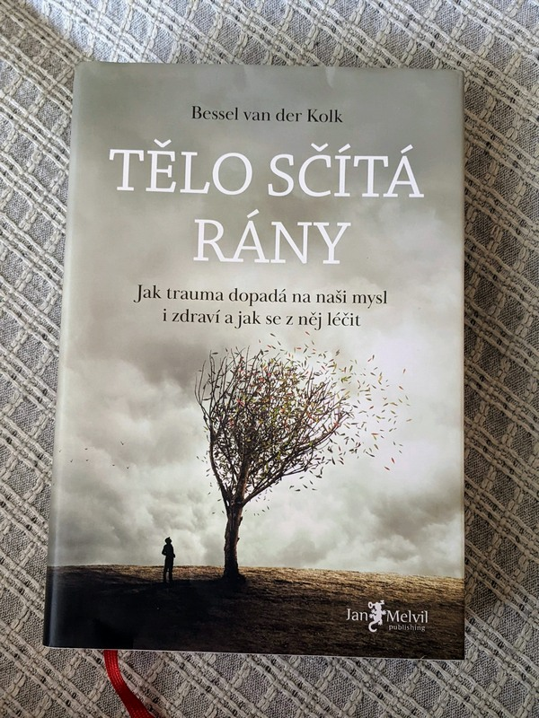
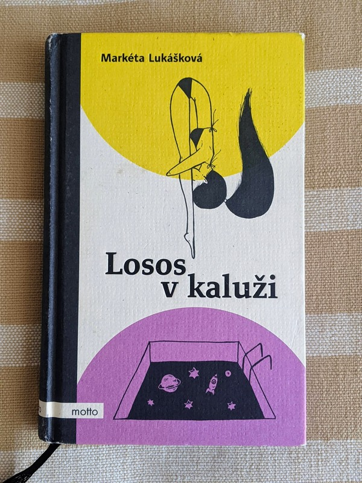
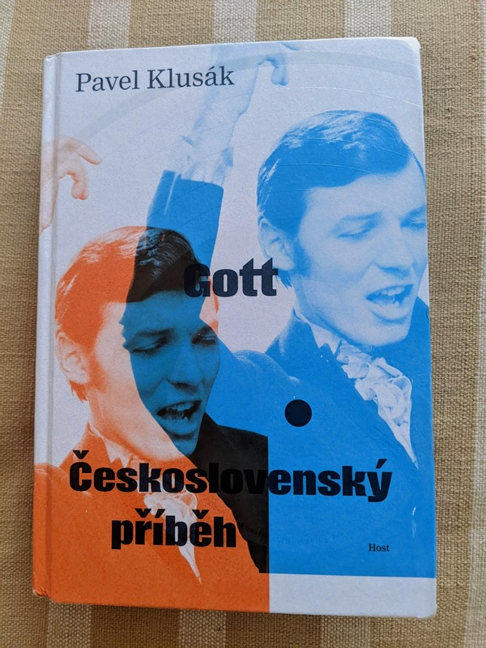
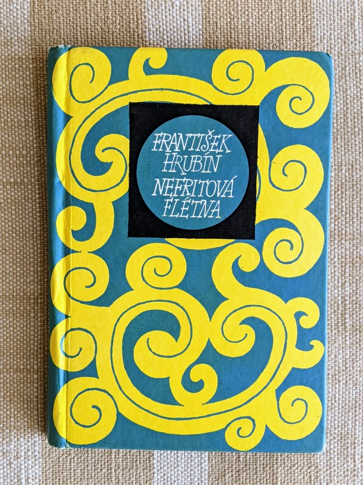
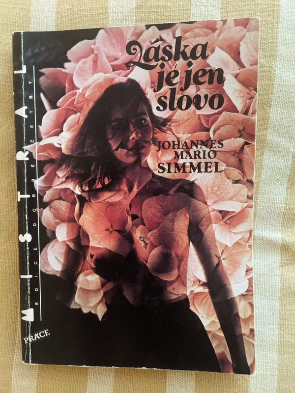

Achjo, to léto zase tak uteklo! A s jeho koncem přichází i pravidelná dávka mé knižní inspirace pro všechny knihomoly :)
Bessel van der Kolk - Tělo sčítá rány
Myslím, že nebudu přehánět, když prohlásím, že se v současné době jedná o naprosto kultovní bibli o problematice traumatu, jeho vzniku a dopadů na naše životy. Dlouho jsem si nebyla jistá, zda tuto publikaci ve své knihovničce potřebuju, ale nakonec jsem si ji napsala na seznam svých vánočních přání a nelituju, ač to není čtení úplně veselé. Přestože kniha obsahuje i dost odborných informací, je povětšinou psaná velice lidsky a srozumitelně. Velmi zajímavá je především kapitola o dětské mysli, byť číst si o řadě případů brutálního týrání malých dětí je místy opravdu drásající a nebude vám z toho lehko u srdce. Přiznám se, že závěrem už jsem se opravdu těšila, až knihu dočtu, bylo toho prostě moc. Ani nevím, zda bych ji někomu doporučila - asi musíte zvážit sami, zda vás téma natolik zajímá a zda tu četbu unesete. Já se každopádně k této publikaci nehodlám vracet, alespoň ne v nejbližší době.

Markéta Lukášková - Losos v kaluži
Jméno autorky Markéty Lukáškové se tu ve čtenářském koutku objevuje už podruhé v krátké době. Na rozdíl od informacemi nabité sondy do toho, co nás “v dějáku nenaučili”, jsem se rozhodla tentokrát sáhnout po beletrii Losos v kaluži a vlastně jsem byla touto jednohubkou i docela příjemně překvapená. Na jednu stranu bych řekla, že kniha vlastně není úplně originální, ať už svým námětem (hlavní dívčí hrdinka s ne zrovna ideálním rodinným zázemím), formou (dvě ústřední postavy se střídají ve vyprávění svého příběhu) či zpracováním. Ale na stranu druhou… Markéta má zkrátka svůj rukopis a Losos v kaluži je protkaný jejím sarkastickým humorem, kvůli kterému tak žeru její podcasty :-D Ty občasné vtípky a slovní obraty za mě přidávají jinak ničím nevyčnívající novele originalitu. Stejně tak originální mi přišlo i autorčino vylíčení toho, jak by to mohlo s člověkem fungovat po smrti, přestože ne všechny myšlenky mi přišly dotažené a občas některé věci v ději nedávaly smysl nebo nebyly vysvětleny. Není to asi knížka, ke které bych se hodlala vracet, ale pokud hledáte nějakou fajn oddechovku třeba na dovolenou (a máte rádi černý humor), věřím, že vás nezklame.

Pavel Klusák - Gott
Tak na tuhle knížku jsem se těšila už od té doby, co jsem objevila podcast Gotťák, a jen co jsem ji zahlédla na ReKnihách, věděla jsem, že bude moje :) Hudební publicista Pavel Klusák v ní přináší ucelený a zároveň neotřelý pohled na nejslavnější osobnost naší popové scény v kulisách československých (nejen) hudebních dějin. Dozvíte se v ní spoustu zajímavostí o Gottových jazzových začátcích, jeho působení v divadle Semafor, ale i o jeho “emigraci” v roce 1971 či událostech kolem Anticharty. Kniha je proložena medailonky osobností, které hrály v Gottově kariéře klíčovou roli, ať už se jedná o německého “hledače talentů” Ossiho Drechslera či produktivního textaře Jiřího Štaidla. Zároveň jsem si rozšířila obzory o existenci osobností neméně významných - třeba jméno Karel Krautgartner je podle mne na české hudební scéně zcela zapomenuto a přitom šlo o tak významného hudebníka a jednoho z těch, kteří na konci 50. let objevili Gottův talent. Pavel Klusák, jak už mi koneckonců vyplynulo i z výše zmiňovaného podcastu, rozhodně nepatří mezi Gottovy slepé obdivovatele, naopak ve své objektivitě hned na úvod knihy nezapomene zdůraznit, že Gott si vždy pečlivě hlídal svůj mediální obraz a rád ho spoluutvářel, k čemuž neváhal občas vypustit do éteru i informace, které byly zjevně nepravdivé nebo neúplné. Autor musel vynaložit nemalé úsilí a vydal se do probádávání řady pramenů, aby alespoň některé tyto fámy uvedl na pravou míru. Zároveň od Klusáka neočekávejte žádný bulvár dehonestující mrtvou legendu, ale naprosto profesionálně odvedenou žurnalistickou práci. Musím říct, že po přečtení této knížky můj pohled na legendu jménem Gott, ale i na některé další známé osobnosti, které se kolem něj v době jeho slávy pohybovaly, už nikdy nebude stejný.

František Hrubín - Nefritová flétna
Dlouhé letní večery a poezie - to jde k sobě jako nic jiného :) I z toho důvodu jsem zase po nějaké době vytáhla z knihovny tuto útlou sbírku Hrubínova přebásnění staré čínské poezie z doby dynastie Tchang (618-906 n.l.) a nechala se unášet jeho verši…
Bez názvu
Člověk je tady hostem, přejde práh
a zakrátko se znovu vrátí v prach,
jejž nespočetné věky navrstvily:
celá ta cesta trvá jenom chvíli.
Nikdo nám živé vody nepodal,
strom života červ dávno rozhlodal.
Kosti jsou němé. O jaru ví stěží
jehličí stále zelené a svěží.
Smutně se dívám dopředu i zpět:
co cenného má pomíjivý svět?Li Po

Johannes Mario Simmel - Láska je jen slovo
Tento román jsem ulovila v našem antikvariátu snad ještě na střední. Asi mě v mých rozervaných -nácti zaujal ten název nebo nevím :-D Každopádně jsem knihu po letech znovuobjevila v kroměřížské knihovničce, a přestože jsem si byla téměř jistá, že jsem ji tenkrát četla, nebyla jsem si za nic na světě schopná vybavit, o čem vlastně byla. Na Databázi knih byl román velice dobře hodnocený, a to mě nakonec přimělo se do něj opět začíst. Po dočtení musím přiznat, že tomu všeobecnému hypu vůbec, ale vůbec nerozumím. Možná na románě, jehož ústředním motivem je “zakázaná láska” vdané ženy a studenta z internátu pro bohaté, zapracoval zub času, ale mně to prostě přišlo takové laciné a stylisticky neumělé. Postavy se nechovaly vůbec autenticky, dialogy byly místy strojené a plné klišé, řada věcí v knize mi přišla nepravděpodobná a nedávala vůbec smysl. Ani žánrově není román úplně ukotvený - na jednu stranu tu máme milostné drama, na straně druhé téměř detektivku, v níž nechybí vydírání, špionáž a nakonec i (sebe)vražda. Za mě zkrátka nic, co bych musela číst potřetí 8-).
